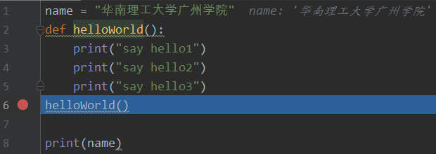
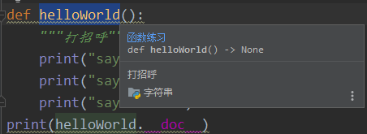

Python基础学习笔记（三）
函数的概念：
所谓函数，就是把具有独立功能的代码块组织为一个小模块，在需要的时候调用
函数的使用包含两个步骤：
1.定义函数 --封装独立的功能
2.调用函数 --享受封装的成果
主要分为：内置函数，标准库函数，第三方库，用户自定义函数
函数的定义与调用：
def name(形参):
#函数内容
#return 返回的内容
name（实参）
传参数的方法：
1基本参数
def saySome(name,word):
print("{0} wanted to say {1}".format(name,word))
2.默认参数
def saySome(name = "HHS",word = "his family to be healthy"):
print("{0} wanted to say that{1}".format(name,word))3.* 参数（用于接收n个参数）
def saySome(*args): #args为一个元组
print(args)
saySome('hzq',2,3)
输出：('hzq', 2, 3) 4.** 参数（用于接收n个默认参数）
def saySome(**kwargs): #kwargs为一个字典
print(kwargs)
saySome(name = "hhs",age = 21) #传值name不用加""，默认转成字符串类型
输出：{'name': 'hhs', 'age': 21}
return（返回值）：
对Pycharm的拓展：
断点：
如图：让程序执行至第六行停止
F8（Step over）从断点处执行，如果是方法，跳过执行至第七行，输出3个hello
F7（Step into）从断点处执行，如果是方法，跳至方法里面执行也就是执行第3行输出hello1

函数文档注释：
在开发中希望给函数添加注释，只需要在函数定义下方添加三个"""xxxx"""（三对引号）
可通过函数名.__doc__输出注释文档；也可选中函数通过crtl + Q查看内容

匿名函数lambda：
格式为：lambda 参数 : return的操作
Add = lambda x,y : x+y
Add(1,2)
输出：3
全局语句global：
global可以为变量赋值为全局变量（一般避免使用）
PI = 3.1415926
AI = 2.1415926
def updatePi():
global PI #指定PI不是局部变量而是全局变量，与函数外的PI指向相同的对象
AI = 2.14 #在函数里出现，为局部变量，与函数外的AI指向不同的对象
PI = 3.14
updatePi()
print(AI,PI)
输出：AI = 2.1415926，PI = 3.14
非局部函数nonlocal：
在嵌套函数中，如果要为定义在上级的函数体的局部变量赋值，可以使用nonlocal
递归函数：
即为自调用函数，在函数体内部直接或间接地直接调用自己
常规案例1：使用递归实现阶乘
def factorial(n):
if n == 1:
return 1
else:
return n * factorial(n-1)
print(factorial(9))常规案例2：斐波那契数列
def fib(n):
if n < 1:
return -1
elif n ==1 or n==2:
return 1
else:
return fib(n-1) + fib(n-2)
函数的闭包（嵌套调用）：
在一个外函数中定义了一个内函数，内函数里引用了外函数的临时变量，并且外函数的返回值是内函数的引用。这样就构成了一个闭包
例子：
def FunX(x):
def FunY(y):
return x*y #引用外函数的临时变量x
return FunY #返回一个内函数
i = FunX(8) #返回一个FunY的函数，且FunY继承了x=8
print(i) #输出为：<function FunX.<locals>.FunY at 0x0037A8A0>
print(i(2)) #输出为16
内置函数总结：
输入输出:
强制转换：
数学相关：
进制转化相关：
其他：
高级内置函数：
1.map（函数，可迭代数据类型） #批量处理常用
v = [10,20,30,40]
v1 = map(lambda x : x+50,v)
print(list(v1))
输出：[60,70,80,90]map不影响v1，返回一个map对象
2.filter（函数，可迭代数据类型） #过滤器
v = [10,20,'hhs',30,1.55]
v1 = filter(lambda x : type(x)==int ,v)
print(list(v1))
输出：[10, 20, 30]
3.reduce（函数，可迭代数据类型） #累积
from functools import reduce
v = [10,20,30,40]
v1 = reduce(lambda x,y : x+y ,v)
print(v1)
输出：100
小练习：华为测试校招一面代码题：求两个数的最大公约数
方法一：辗转相除法
def fun1(a,b):
if b > a:
a, b = b, a
while a % b !=0: #除至余数为0时跳出循环，取小的数b为最大公因数
c = a % b
a = b
b = c
return b方法二：辗转相减法
def fun2(a,b):
while a - b !=0:
if a > b:
a = a - b
else:
b = b - a
return b